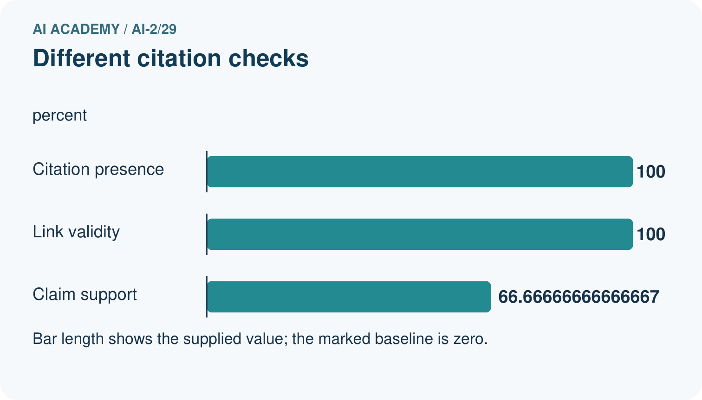
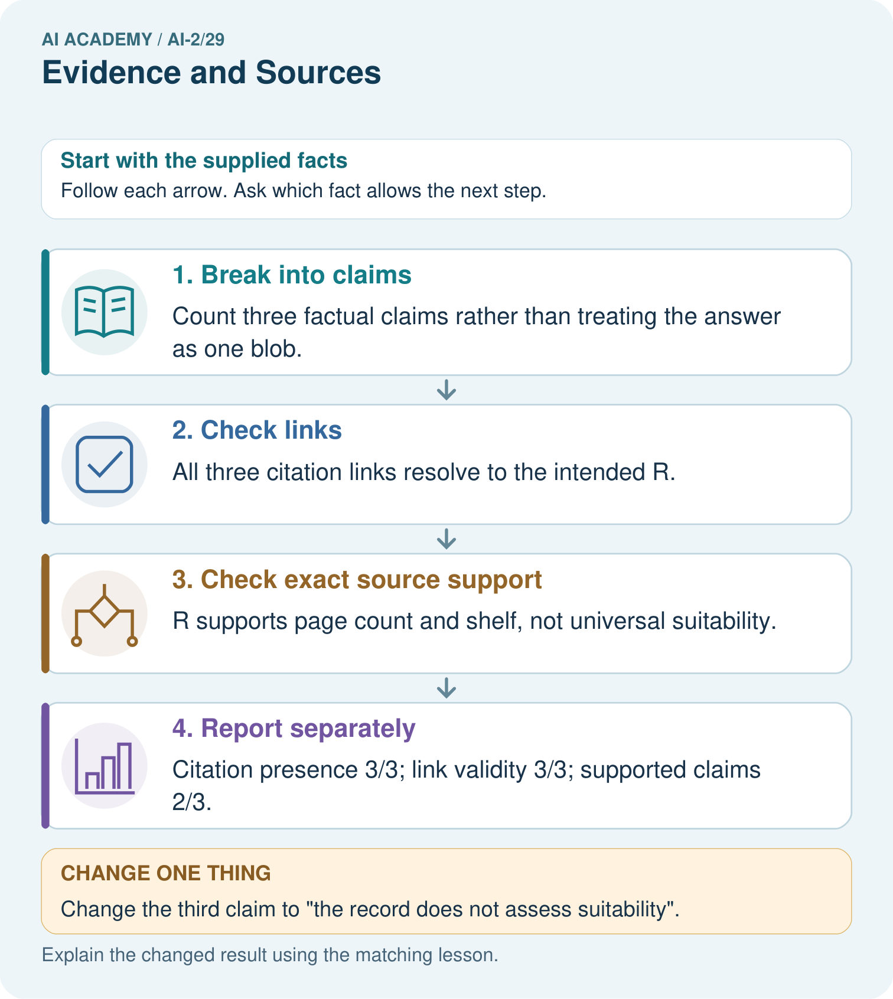
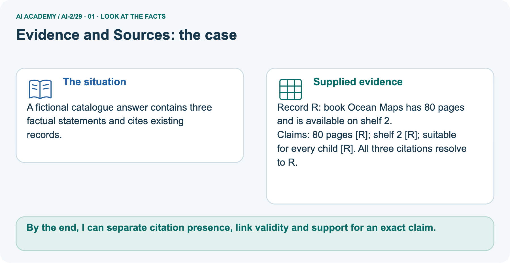
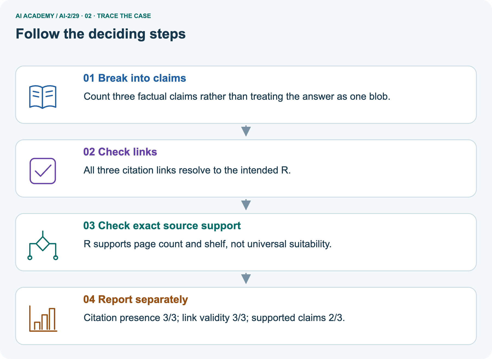
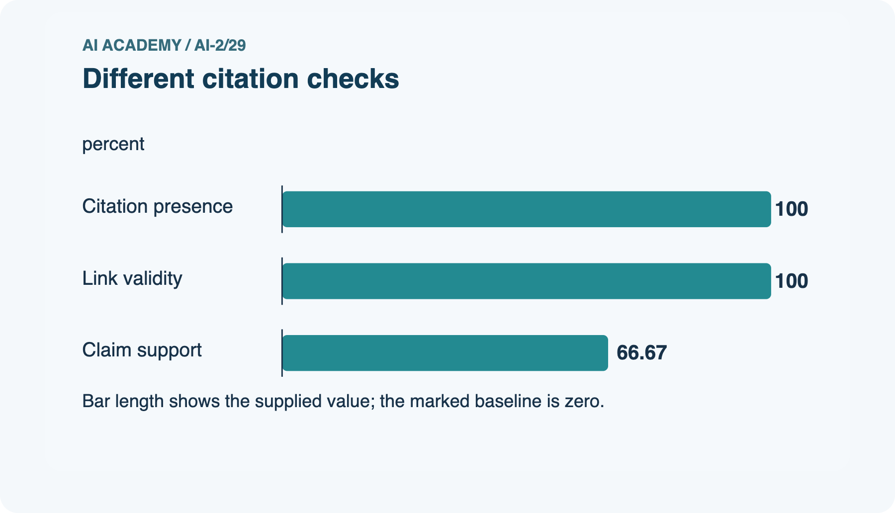
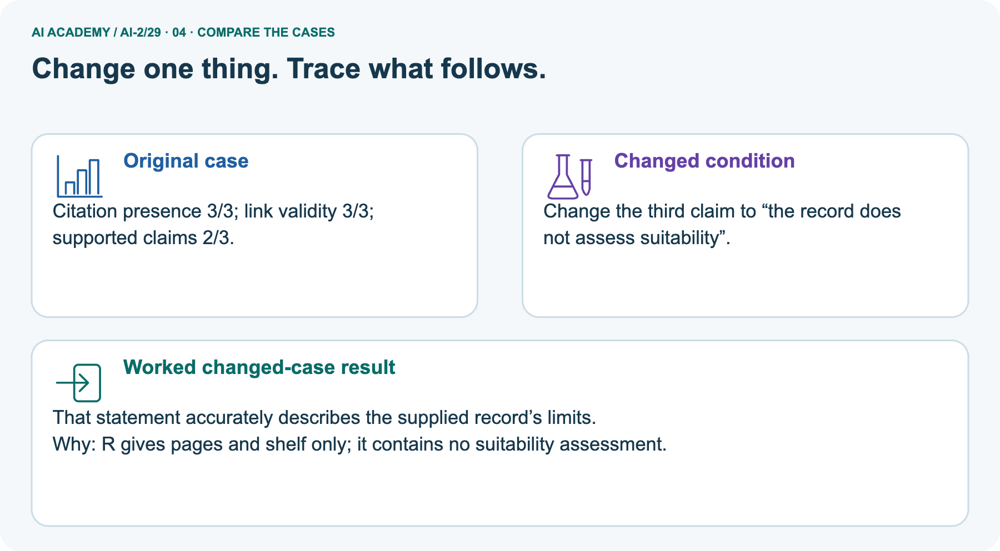
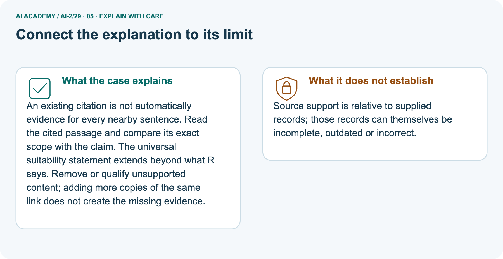
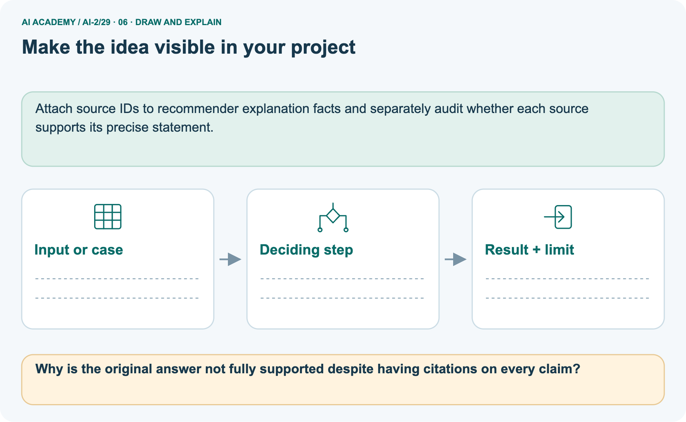

AI Academy · Level 2 · Grade 7 · Week 29 · Teacher guide
Evidence and Sources
Learn to understand, design, build, test and explain AI systems responsibly.
Project: Transparent Book Recommender
Teacher guide · 1 of 9
Evidence and Sources
Prepare Evidence and Sources: check the target, prerequisites, resources and adaptable teaching schedule.
Teach the learning cycle
Primary target: Explain the mechanism and terminology of claim support and citation evaluation
| Session | Sequence and minutes | Resources |
|---|---|---|
| Session 1 · Understand · 45 min | 0–7: recall and prerequisite; 7–15: inspect the concrete case and predict; 15–30: teacher models the worked trace; 30–40: learners explain a step using the text and visual; 40–45: check the core idea. | Use Your mission, Notice the evidence, See how it works, Compare the cases, Words that unlock the idea and Follow a worked example; record the brief recall in the workbook. |
| Session 2 · Practise · 45 min | 0–5: retrieve the procedure; 5–15: W2 completion practice; 15–23: explain and check with a partner; 23–30: each learner answers the misconception check; 30–40: targeted reteaching or a harder variation; 40–45: prepare the investigation. | Use Find and repair a mistake, Practise together, Run the investigation and Build your understanding; use the matching workbook W2 and misconception check. |
| Session 3 · Investigate and transfer · 45 min | 0–5: retrieve the decision rule; 5–20: investigate or trace; 20–30: start the independent case; 30–38: connect the project; 38–43: act on feedback; 43–45: plan the return check. | Use Run the investigation, Connect your project, Show what you know, Study a complete case and Try a new case independently. Allow extra time for the full task set. Use a coding lab only when this week actually provides one; Your lesson route is the planning section. |
This is a starting allocation of 135 minutes, not a validated duration. Preserve all named topics. Schedule extra time for connected examples, the full investigation, independent cases and project building.
Repeated copies of a case share one recorded attempt; they are not new evidence.
Case exposure check: this source example appears in ai-2/29, ai-3/16. Reuse a familiar case for recall or modelling; verify that the case used to assess transfer has not already received feedback.
Retrieval answer guidance
Prompt Experiments
Without opening the old lesson, explain one key idea from Prompt Experiments. Give an example and a mistake that the idea helps you avoid.
Look for: Explain the mechanism and terminology of controlled prompt experiments
Reference example, not the only acceptable wording: Teacher explanation: A prompt experiment compares complete specifications using the same task cases.
Define success before inspecting outputs; change one intended instruction and preserve other settings. Evaluate both prompts on paired cases with fixed model/version, source records, output contract and scoring rubric.
Use development results for selection, then reserve new final cases. Score each case rather than counting attractive sentences.
Image and Voice Pipelines
Without opening the old lesson, explain one key idea from Image and Voice Pipelines. Give an example and a mistake that the idea helps you avoid.
Look for: Explain the mechanism and terminology of speech pipelines and multimodal evidence
Reference example, not the only acceptable wording: Teacher explanation: A multimodal pipeline may transcribe speech, inspect an image and generate a response.
Errors at one stage can propagate even when later stages run correctly. Track source modality, segment/time references, transcription, interpretation and final claims separately.
Compare conflicting evidence without assuming one modality always wins. Ask for clarification when the task needs unresolved information.
Recommendation Scores
Without opening the old lesson, explain one key idea from Recommendation Scores. Give an example and a mistake that the idea helps you avoid.
Look for: Compute a weighted score
Reference example, not the only acceptable wording: Score 8.
Use the student module and workbook section with this exact week title. The worked case, independent question and answers below form one aligned lesson sequence.
What the learner must demonstrate
Two catalogue records list 96 and 112 pages for a title. A helper averages them and reports 104. Explain the mistake and a better verification process.
Concept to explain
Claims require sources matched to the question and checked independently.
| Term | Meaning |
|---|---|
| claim | A statement that can be examined using evidence and reasoning. |
| source | The record, person or material from which information is obtained. |
| independent | Produced or assessed without the specific influence being excluded; state whether this means uncoached work or separate test data. |
| corroborate | Support a claim with additional relevant evidence, ideally independent of the first source. |
Prepare the class
Use the supplied scenario, student illustrations and blank paper. For numeric work, offer counters or a calculator after learners show the setup. Fictional records are supplied; personal data and paid accounts are unnecessary.
Alternative compact allocation
This compact option is not the full-week schedule. Use the main teaching cycle and allow extra sessions for the investigation, independent work and project.
Allow 80 minutes: recall 8; explanation 12; worked demonstration 15; guided practice 20; independent assessment 15; project and reflection 10. Extend the lab into a second session when needed.
Preparation for the connected explanation
Two 45-minute sessions. Citation evaluation checks source existence, exact passage support and coverage of answer claims. A real citation can still be irrelevant.
Use the supplied constructed scenarios to make the mechanism inspectable. Collect W4 before sharing solutions.
Students should name intermediate evidence and limitations; classroom pacing and learning effectiveness remain unvalidated.
Readiness answer
A result depends on the inputs, procedure and conditions that produced it. Preserve data roles and distinguish observed outcomes from predictions or unmeasured conditions.
If the prior concept cannot be explained, use a short retrieval activity before this chapter.
Lesson and workbook; paper and pencil
Calculator and optional local Python 3 for arithmetic; no live API or private data
Prepare the fresh retry separately and withhold its solution until after collection
End goal for the pictorial case
By the end, I can separate citation presence, link validity and support for an exact claim.
This added worked case illustrates the week’s main idea. Retain all original and connected topics; schedule its practice within the teaching cycle.
Teacher guide · 2 of 9
Explain the mechanism
Model Evidence and Sources using the supplied case, labelled mechanism and reasoning. Make the scope of each conclusion explicit.
Input → Process → Output
Trace the information. At each stage, ask what changed and how you could test it.
Which stage could fail even when the other two are correct? Explain:
Predict first. Then check each step. A correct answer without visible reasoning is incomplete evidence.
1. Claim: a book won an award in 2024.
2. Find the award organization’s record and the publisher’s page.
3. Check exact title, year, edition, and whether sources are independent.
4. If evidence conflicts or is absent, mark ‘not verified’ rather than guess.
Recalculate, retrace, or restate the reasoning in your own representation:
CHECK Did the evidence answer the exact question? Did the total, path, or source record stay consistent?
Concrete teaching case
The teaching case
An answer says 80 pages, but the catalogue for that edition says 120.
What evidence guides correction?
Exact explanation to model
Why the result follows
Check the exact edition and authoritative catalogue record. Record the supporting source.
Explain the added worked example
Citation evaluation checks source existence, exact passage support and coverage of answer claims. A real citation can still be irrelevant.
Explain the added worked example · 1
Begin by writing the question the procedure is intended to answer. Identify the information already supplied, the information it will produce and the information still missing.
These are constructed classroom examples; they do not require live accounts, private records or an external service. Do not treat a plausible explanation as a measured outcome.
For this classroom rubric count a claim as supported only when its cited passage entails it. Separately count correct citation links. Use the number of factual claims as the support denominator.
Explain the added worked example · 2
Before applying the procedure, write its units, denominator or decision boundary where relevant. A partner should be able to repeat each step using the same inputs.
If a required input is absent or violates the stated contract, record that condition explicitly instead of quietly replacing it with a convenient value.
Key terms
| Term | Meaning |
|---|---|
| Entailment | Whether the cited passage supports the specific claim |
| Citation coverage | Which claims include source references |
| Link validity | Whether a source reference resolves to the intended record |
Model the reasoning aloud
Use the complete worked example below before asking learners to complete W2. Reveal a small part, invite a prediction, then explain the deciding step.
These teacher notes contain solutions; do not reveal the independent case answer during modelling.
An answer has four factual claims. Three have citations, but only two are supported by their cited passages. All links exist.
Claim support is 2/4=50%; citation presence is 3/4=75%; link existence among three citations is 3/3. These measure different failures.
Model the reasoning aloud · 3
Compare the intermediate evidence with the final statement. Explain why each number or decision follows from the stated inputs.
The conclusion belongs to this scenario and procedure; changing the inputs, evaluation population or authority can change what it establishes. Retain the raw record so a later revision can be compared honestly.
| Thinking move | Teacher prompt |
|---|---|
| Plan | What is given? What is the question? Which procedure fits these facts? |
| Do | Point to each input and intermediate step in the worked trace. Name the rule that allows the next step. |
| Check | Does the output answer the question? Which assumption or limitation prevents a larger claim? |
Use the diagram and verbal explanation together. Ask learners to match a sentence to a specific visual step; do not assign learners fixed visual or auditory learning styles.
A pictorial worked case: Evidence and Sources
A fictional catalogue answer contains three factual statements and cites existing records.
The facts we will use
Supplied facts
Record R: book Ocean Maps has 80 pages and is available on shelf 2.
Supplied facts
Claims: 80 pages [R]; shelf 2 [R]; suitable for every child [R]. All three citations resolve to R.


Read the picture one step at a time
Why this result follows
Why the result follows
An existing citation is not automatically evidence for every nearby sentence. Read the cited passage and compare its exact scope with the claim. The universal suitability statement extends beyond what R says.
Remove or qualify unsupported content; adding more copies of the same link does not create the missing evidence.
What this example does not establish
Keep the stated limit
Source support is relative to supplied records; those records can themselves be incomplete, outdated or incorrect.
Change one thing in the pictured case
Change one thing
Change: Change the third claim to “the record does not assess suitability”.
Predicted result
Prediction: That statement accurately describes the supplied record’s limits.
Why the result follows
Reason: R gives pages and shelf only; it contains no suitability assessment.
Ask while showing the picture
Ask while showing the picture · 4
Cover the result. Ask learners to name the inputs and predict the next step. Uncover one step, connect the icon to the actual procedure, and explain its evidence. Then change the supplied condition and compare.
The picture is a representation; it does not document execution of a real AI model.
Teacher guide · 3 of 9
Demonstrate and guide practice
Demonstrate Evidence and Sources, reduce support deliberately and check individual reasoning before discussing answers.
Board sequence
1. Put the facts on the board
Write the given facts: An answer says 80 pages, but the catalogue for that edition says 120.
2. State the decision to explain
Write the question to explain: What evidence guides correction?
3. Reveal the worked reasoning
Reveal after predictions: Check the exact edition and authoritative catalogue record. Record the supporting source.
Hold back the independent task
Keep for an independent attempt: An answer cites a page about opening hours to support a claim about book prices. Is a citation enough? What must be checked?
Classroom dialogue
Ask the class
Ask: Which facts are given, and which would we have to assume? Learners mark relevant details before discussing answers.
Language to model
Say: Predict first. Show the rule, information path or calculation that would produce the result. A correct guess is not yet an explanation.
Reveal reasoning one step at a time. Explain why a tempting alternative fails. Write units and denominators for arithmetic, trace conditions for decisions, and identify supporting sources for claims.
In pairs, one learner solves while the other checks evidence; exchange roles. Remove the worked answer before independent assessment.
Model these guided questions
Guided: Claim support is 2/4=50%; citation presence is 3/4=75%; link existence among three citations is 3/3. These measure different failures.
Qualification: Citation counts do not establish truth beyond the supplied sources or the correctness of uncited claims.
Exit: accept a concrete variation with its predicted outcome and a stated condition that would challenge the mechanism; reject a claim resting on unmeasured evidence.
Case-specific teaching sequence
| Stage | Teacher action |
|---|---|
| Session 1: 0–7 minutes | Retrieve the prerequisite; identify the input, procedure and evidence source. |
| 7–18 minutes | Explain See how it works and Words that unlock the idea. Complete W1 with a mechanism-based explanation. |
| 18–32 minutes | Trace the declared procedure and worked case. Complete W2, recording intermediate steps. |
| 32–45 minutes | Discuss the diagram with the worked input; use W3 to distinguish measured claims and limitations. |
| Session 2: 0–8 minutes | Retrieve the worked reasoning and collect the guided response before discussing it. |
| 8–20 minutes | Compare a proposed boundary variant with the original case; identify what remains fixed. |
| 20–35 minutes | Collect W4 independently. Require the procedure trace and the bounded conclusion. |
| 35–45 minutes | Use W5 and exit responses for feedback. Administer the fresh retry after feedback and preserve both attempts. |
Reduce help deliberately
Completion practice
Completion task: An answer has four factual claims. Three have citations, but only two are supported by their cited passages. All links exist. Show the intermediate steps and give the conclusion with its scope.
Reasoning to listen for
Teacher check: Teacher explanation: Claim support is 2/4=50%; citation presence is 3/4=75%; link existence among three citations is 3/3. These measure different failures.
Start by identifying the given inputs together. Leave the intermediate steps blank. If needed, model one step, then withdraw that help on the next step. Move to a full trace only when the partial trace is understood.
For partners, alternate explainer and checker; collect a response from every learner before discussion.
Individual reasoning check
Use the worked case for Claim support and citation evaluation. Proposed explanation: “The worked result establishes every future case”. Decide whether this explanation is supported.
Point to the step or supplied fact that decides; explain your repair if needed.
Expected repair
Expected correction: Citation counts do not establish truth beyond the supplied sources or the correctness of uncited claims.
Collect explanations, not only yes/no votes. If a misunderstanding is common, re-model the relevant step for the class.
If it affects a few learners, give a short targeted group explanation while others solve a more demanding variation.
Pictorial practice question
Why is the original answer not fully supported despite having citations on every claim?
Reasoned teacher answer
One of the three claims is not entailed by its cited source; citation coverage and link validity do not measure claim support.
Changed-case reasoning: That statement accurately describes the supplied record’s limits. R gives pages and shelf only; it contains no suitability assessment.
Collect each learner’s explanation before discussion. Use the first missing connection between input, deciding step and result to choose support. This question is worked-case practice, not fresh mastery evidence.
Teacher guide · 4 of 9
Run the weekly evidence lab
Run the Evidence and Sources investigation and use the first unsupported step to choose a teaching response.
Words You Can Use to Reason
A definition matters when you can recognize the idea, use it, and contrast it with a near-miss.
Predict → Test → Record → Explain
Keep expected and actual results separate. Surprises are useful data when recorded honestly.
Highlight checkable claims in an answer, match each to the best source type, record evidence, and label supported / conflicting / unverified.
What did the hardest test teach you that the normal test did not?
Make the lab runnable
Use the concrete case as the shared normal case and the independent question as a second case. Each pair creates a boundary or missing-information case and predicts its result before testing.
Keep the expected result separate from an observed mistake.
| Record | What to capture |
|---|---|
| Input or evidence | Exact data, instruction or claim |
| Expected result | Answer or safe fallback declared before the run |
| Observed result | Actual result, including errors |
| Explanation | Rule, calculation or evidence explaining the outcome |
| Next test | One justified change and a new prediction |
Diagnose and reteach
For guessing, return to given facts and request a trace. For vocabulary without application, use one example and one non-example. For arithmetic errors, check the setup before the calculation.
Finish with a different uncoached case before recording mastery.
Address these additional misconceptions
The worked result establishes every future case: Citation counts do not establish truth beyond the supplied sources or the correctness of uncited claims.
A missing input may be replaced without recording the change: A replacement changes the evidence or contract. Record the change and its justification; do not silently turn unknown into a measured value.
Repeating an assessed case is new independent evidence: A replay checks consistency. An example used for feedback or revision cannot later be described as untouched final evaluation.
Match the support to the first error
| What the response shows | Next teaching action |
|---|---|
| Missing or misread facts | Read the case aloud, mark supplied versus unknown facts, and let the learner restate it. |
| Wrong procedure | Return to the deciding step in the worked case. Contrast it with the proposed incorrect explanation. |
| Arithmetic or implementation error | Trace intermediate values or lines; preserve the first mismatch and retry that step. |
| Correct result without a reason | Ask for a trace and a changed case before marking independent understanding. |
| An unsupported wider claim | Ask which supplied evidence supports the claim and which further observation would be needed. |
Offer an oral explanation, drawing, enlarged visual or fewer examples when that removes a reading/writing barrier. Keep the same reasoning goal.
Stretch secure learners by changing a boundary or assumption and asking them to defend the effect, not simply by assigning more of the same questions.
Teacher guide · 5 of 9
Assess and explain the answers
Use the Evidence and Sources questions, teacher keys and criteria after the relevant attempts. Previously discussed cases are practice; protect the separately selected independent task.
Worked case answer
Teacher key · Worked case answer
Check the exact edition and authoritative catalogue record. Record the supporting source.
Independent question
Independent question · withhold the key
An answer cites a page about opening hours to support a claim about book prices. Is a citation enough? What must be checked?
Expected independent answer
Teacher key · Expected independent answer
No. Inspect whether the cited passage directly supports the price claim and is relevant and current for the task.
What counts as evidence
| Criterion | 0 points | 1 point | 2 points |
|---|---|---|---|
| Result | Incorrect or absent | Partly correct | Correct with necessary conditions |
| Reasoning | No supporting trace | Some steps | Clear mechanism, calculation or source support |
| Limit | Overclaims certainty | Vague limitation | Relevant uncertainty or missing fact |
| Transfer | Copies without adapting | Adapts with prompts | Solves a changed case independently |
Use 6/8 as a classroom checkpoint, with 2 required for both Result and Reasoning. This is a proposed teaching rule, not a validated certification threshold.
Do not count a coached answer as independent mastery; correct unsafe or unsupported claims regardless of total.
Feedback
Ask the learner to find the evidence that challenges this claim: “Any citation proves any nearby claim.” Keep the first attempt and an uncoached retry separate.
Original transfer answer
Teacher key · Original transfer answer
Identify ISBN or edition and consult its authoritative record or the supplied book. Report the supported page count for that edition; if unresolved, state uncertainty.
Averaging conflicting records invents a value that may match no actual edition.
Explanations for the additional workbook examples
W1 Explain the mechanism
Workbook question · W1
Explain the weekly mechanism in your own words. Use the worked scenario to name its input, decision rule and output.
Teacher reasoning · W1
Teacher explanation: Citation evaluation checks source existence, exact passage support and coverage of answer claims. A real citation can still be irrelevant.
For this classroom rubric count a claim as supported only when its cited passage entails it. Separately count correct citation links. Use the number of factual claims as the support denominator.
W2 Trace the worked case
Workbook question · W2
An answer has four factual claims. Three have citations, but only two are supported by their cited passages. All links exist. Show the intermediate steps and give the conclusion with its scope.
Teacher reasoning · W2
Teacher explanation: Claim support is 2/4=50%; citation presence is 3/4=75%; link existence among three citations is 3/3. These measure different failures.
W3 Audit the limit
Workbook question · W3
A report omits this qualification: Citation counts do not establish truth beyond the supplied sources or the correctness of uncited claims.
Explain how omitting it could change a reader's interpretation, and write an accurate replacement.
Teacher reasoning · W3
Teacher explanation: Citation counts do not establish truth beyond the supplied sources or the correctness of uncited claims.
State the observed result separately from the unverified or out-of-scope claim; preserve the original evidence rather than inventing a missing fact.
W4 Apply a new case independently
Workbook question · W4
Five claims; four cited; three supported by cited passages; one cited ID is nonexistent. Compute support and citation presence and explain link limits.
Teacher reasoning · W4
Teacher explanation: Support=3/5=60%; citation presence=4/5=80%. Link checks reject the nonexistent ID; remaining real links still need entailment checks.
W5 Design a revealing follow-up
Workbook question · W5
For the worked scenario, propose one additional case that could reveal a failure, describe its expected outcome before running it, and explain what would need to remain fixed for a fair comparison.
Do not reuse W4 as a new final test after receiving feedback.
Teacher reasoning · W5
Teacher explanation: Accept a concrete variant of the worked input or a missing/conflicting/boundary condition, with an expectation derived from the declared procedure.
Require preserved settings, original outputs and data roles. Citation counts do not establish truth beyond the supplied sources or the correctness of uncited claims.
The new case should test this particular mechanism rather than merely restate the original result.
Assess independent transfer
Independent question · withhold the key
Selected case: Five claims; four cited; three supported by cited passages; one cited ID is nonexistent. Compute support and citation presence and explain link limits.
Selected case answer
Teacher key · Selected case answer
Teacher explanation: Support=3/5=60%; citation presence=4/5=80%. Link checks reject the nonexistent ID; remaining real links still need entailment checks.
| Dimension | Evidence required |
|---|---|
| Explanation | Names the applicable idea or procedure and ties it to the supplied facts. |
| Trace and result | Preserves the given inputs and shows the relevant intermediate steps; distinguishes a prediction from an observed execution. |
| Limits | States the assumptions, missing evidence or conditions under which the result would change. |
Teacher key · Selected case answer
Record each dimension as not yet, with support, or independent. Accept a valid alternative procedure with a defensible trace.
Do not penalise an honestly recorded model failure if the learner correctly explains its evidence and limits.
Feedback that the learner uses
Name the earliest unsupported step and give one action to repair it. Have the learner make that repair now and explain why. Then assess the relevant skill on a fresh, fully specified case.
Confirm it was not previously practised with feedback; solve and check the new case before assigning it. A follow-up design prompt is a starting brief, not automatically an equivalent test.
Teacher guide · 6 of 9
Connect and extend learning
Connect Evidence and Sources to Transparent Book Recommender, adapt support and plan a later changed-case check.
Transparent Book Recommender
Separate profile-based ranking evidence from factual book information and cite the latter.
Keep the decision, input, result, explanation and remaining limitation in the project evidence record. Retrieve this record next week rather than restarting the project.
Support and stretch
Trace one record or condition at a time with counters and labelled columns. Stretch: introduce a tie, boundary or missing field and declare its handling policy before rerunning.
Exit reflection
Ask for one decision the learner can now justify and one situation requiring more evidence or human review. Confidence ratings are separate from correct independent performance.
Bridge to the next week
Next: Week 30: Agents and Tools. Retrieve today’s evidence and identify what carries forward and what is new.
Support and fresh reassessment
Provide an input/procedure/result/limit frame and a calculator when needed. Ask students to identify the first step before completing the whole trace.
Extension: compare two concrete variants of this mechanism while holding unrelated conditions fixed; report both successful and unsuccessful outcomes.
W4: Support=3/5=60%; citation presence=4/5=80%. Link checks reject the nonexistent ID; remaining real links still need entailment checks. Require intermediate reasoning and the stated scope.
Fresh retry: Six claims, five cited, four supported; all five links real. Expected reasoning: Support 4/6=2/3; citation presence 5/6; link existence 5/5 does not verify every claim.
If students need support, record it and reassess with another new case rather than awarding independence to a copied answer.
Next connection: Abstention and clarification. Preserve the current case record and retrieve its evidence boundary before moving on.
Plan the delayed return
Suggested return points in this level: ai-2/30, ai-2/32, ai-2/35. Use actual classroom dates, adjusting for holidays and gaps. One, three and six teaching weeks are scheduling choices, not a claimed optimal spacing.
At a delayed check, ask for the idea from memory and a changed application. Compare with the earlier independent response and record support used.
For a new level, revisit the previous capstone before checking the new prerequisites.
| Record | Teacher evidence |
|---|---|
| Learner code and date | |
| Concept and case used; prior exposure | |
| Explanation / trace / limits | |
| Support and first repair | |
| Changed case and delayed outcome | |
| Next teaching action |
Use the evidence to choose reteaching or the next step. A completed page, confidence rating or attractive project does not by itself demonstrate understanding.
Project evidence from this case
Attach source IDs to recommender explanation facts and separately audit whether each source supports its precise statement.
Teacher guide · 7 of 9
Prepare, teach and assess
Use this preparation summary alongside the detailed Evidence and Sources lesson; it is a checklist rather than a replacement for the full sequence.
Teaching target
Teaching target: Explain the mechanism and terminology of claim support and citation evaluation
Prepare the labelled worked-case picture, the matching workbook, fictional input cards and a place for individual responses. No paid AI account is required for the paper reasoning activities.
| Session | Plan | Resources |
|---|---|---|
| Session 1 · Understand · 45 min | 0–7: recall and prerequisite; 7–15: inspect the concrete case and predict; 15–30: teacher models the worked trace; 30–40: learners explain a step using the text and visual; 40–45: check the core idea. | Use Your mission, Notice the evidence, See how it works, Compare the cases, Words that unlock the idea and Follow a worked example; record the brief recall in the workbook. |
| Session 2 · Practise · 45 min | 0–5: retrieve the procedure; 5–15: W2 completion practice; 15–23: explain and check with a partner; 23–30: each learner answers the misconception check; 30–40: targeted reteaching or a harder variation; 40–45: prepare the investigation. | Use Find and repair a mistake, Practise together, Run the investigation and Build your understanding; use the matching workbook W2 and misconception check. |
| Session 3 · Investigate and transfer · 45 min | 0–5: retrieve the decision rule; 5–20: investigate or trace; 20–30: start the independent case; 30–38: connect the project; 38–43: act on feedback; 43–45: plan the return check. | Use Run the investigation, Connect your project, Show what you know, Study a complete case and Try a new case independently. Allow extra time for the full task set. Use a coding lab only when this week actually provides one; Your lesson route is the planning section. |
Before class, solve the supported practice: An answer has four factual claims. Three have citations, but only two are supported by their cited passages. All links exist.
Show the intermediate steps and give the conclusion with its scope.
Supported practice answer
Reasoned practice answer: Teacher explanation: Claim support is 2/4=50%; citation presence is 3/4=75%; link existence among three citations is 3/3. These measure different failures.
Check every learner before discussion: Use the worked case for Claim support and citation evaluation. Proposed explanation: “The worked result establishes every future case”. Decide whether this explanation is supported.
Point to the step or supplied fact that decides; explain your repair if needed.
Repair the misconception
Misconception repair: Citation counts do not establish truth beyond the supplied sources or the correctness of uncited claims.
Support without giving away the answer
Support: read the exact case aloud, enlarge the labelled picture, supply input cards and model only the first deciding step. Accept a spoken explanation or drawing; retain the reasoning goal.
Extend the reasoning
Extension: Change the third claim to “the record does not assess suitability”. Require a prediction and a reason before comparing. Expected result: That statement accurately describes the supplied record’s limits.
Reason: R gives pages and shelf only; it contains no suitability assessment.
Protect the independent attempt
Independent assessment: withhold the reserved answer until the learner has attempted the new case. Record support separately from correctness.
| Criterion | Not yet | With support | Independent |
|---|---|---|---|
| Explanation | Names an answer without a deciding fact | Uses a hint to link fact and decision | Explains the deciding fact in own words |
| Trace or test | Cannot connect input and result | Completes steps with prompts | Traces or tests a changed case accurately |
| Limits and revision | Claims more than evidence supports | Names a limit after a prompt | States a defensible limit and useful next test |
Project checkpoint
Project checkpoint: Prepare the demonstration. Gather reproducible instructions, evidence, access checks and remaining limitations.
Use the weekly teacher answer for topic-specific reasoning. A saved progress tick is an activity record; judge mastery from the learner’s explanation and evidence.
Teacher guide · 8 of 9
Use feedback, labs and repair paths
Use feedback, earlier review and portfolios purposefully. Apply the coding routine only when this lesson has an executable lab.
Use the two formative questions as supported practice, not as independent mastery scores. Discuss the deciding evidence rather than accepting a guessed selection.
The feedback comes from the reviewed public worked case. Do not reveal the separately reserved independent teacher answer until the learner has attempted that case.
For later coding lessons
This week has no code block. Use this routine when a later lesson includes an executable lab.
Ask students to predict before running code. Preserve errors and actual outputs; collect a changed test and an explanation. The branch-boundary and indexing lessons deliberately include failure cases.
Use the earlier worked-explanation links to address a specific missing building block, then return to the current question. Adapt this suggestion after observing the learner; it is not an automatic diagnosis.
Collect the completed-work portfolio as evidence. Record support separately from correctness, and assess explanation, trace/test and limitations. Progress ticks and quiz selections alone do not establish mastery.
Teacher guide · 9 of 9
Visual concept journey
Show one Evidence and Sources graphic at a time, request a prediction and discuss its trace before the independent assessment.
Use one picture at a time. Hide a worked result before asking for a prediction, then reveal it for feedback. These are supported teaching cases; retain the separate independent assessment for a fresh first attempt.
01. Evidence and Sources: the case

A fictional catalogue answer contains three factual statements and cites existing records. Supplied facts: Record R: book Ocean Maps has 80 pages and is available on shelf 2.
Claims: 80 pages [R]; shelf 2 [R]; suitable for every child [R]. All three citations resolve to R.
Point to the given fact that matters most. Explain why it matters.
Discuss while showing the picture
Teacher prompt: Point to the given fact that matters most. Explain why it matters. Ask learners to describe one label or arrow in ordinary words. Use the adjacent transcript if the image is difficult to see.
02. Follow the deciding steps

Break into claims: Count three factual claims rather than treating the answer as one blob. → Check links: All three citation links resolve to the intended R. → Check exact source support: R supports page count and shelf, not universal suitability. → Report separately: Citation presence 3/3; link validity 3/3; supported claims 2/3.
Point to each numbered stage and explain which recorded input it uses.
Discuss while showing the picture
Teacher prompt: Point to each numbered stage and explain which recorded input it uses. Ask learners to describe one label or arrow in ordinary words. Use the adjacent transcript if the image is difficult to see.
03. Different citation checks

Different citation checks. Units: percent. Citation presence: 100. Link validity: 100. Claim support: 66.66666666666667.
Read the labels and values. Explain the relationship the model shows.
Discuss while showing the picture
Teacher prompt: Read the labels and values. Explain the relationship the model shows. Ask learners to describe one label or arrow in ordinary words. Use the adjacent transcript if the image is difficult to see.
Check row/column meanings, units and denominators before discussing a difference. Supplied toy values are not real class or model results.
04. Change one thing. Trace what follows.

Original case: Citation presence 3/3; link validity 3/3; supported claims 2/3. Changed condition: Change the third claim to “the record does not assess suitability”.
Expected result: That statement accurately describes the supplied record’s limits. Reason: R gives pages and shelf only; it contains no suitability assessment.
Predict before checking the worked changed-case result. Name what changed and what the supplied facts allow you to conclude.
Discuss while showing the picture
Teacher prompt: Predict before checking the worked changed-case result. Name what changed and what the supplied facts allow you to conclude. Ask learners to describe one label or arrow in ordinary words.
Use the adjacent transcript if the image is difficult to see. Changed-case reasoning: R gives pages and shelf only; it contains no suitability assessment.
05. Connect the explanation to its limit

An existing citation is not automatically evidence for every nearby sentence. Read the cited passage and compare its exact scope with the claim. The universal suitability statement extends beyond what R says.
Remove or qualify unsupported content; adding more copies of the same link does not create the missing evidence.
Limit: Source support is relative to supplied records; those records can themselves be incomplete, outdated or incorrect.
Explain the case, then point to a limit on the claim.
Discuss while showing the picture
Teacher prompt: Explain the case, then point to a limit on the claim. Ask learners to describe one label or arrow in ordinary words. Use the adjacent transcript if the image is difficult to see.
Keep the stated scope: Source support is relative to supplied records; those records can themselves be incomplete, outdated or incorrect.
06. Make the idea visible in your project

Attach source IDs to recommender explanation facts and separately audit whether each source supports its precise statement. Draw your input, deciding step, result and limit.
Supported question: Why is the original answer not fully supported despite having citations on every claim?
Draw your project trace and justify the deciding step using evidence.
Discuss while showing the picture
Teacher prompt: Draw your project trace and justify the deciding step using evidence. Ask learners to describe one label or arrow in ordinary words. Use the adjacent transcript if the image is difficult to see.
Supported practice key: One of the three claims is not entailed by its cited source; citation coverage and link validity do not measure claim support.